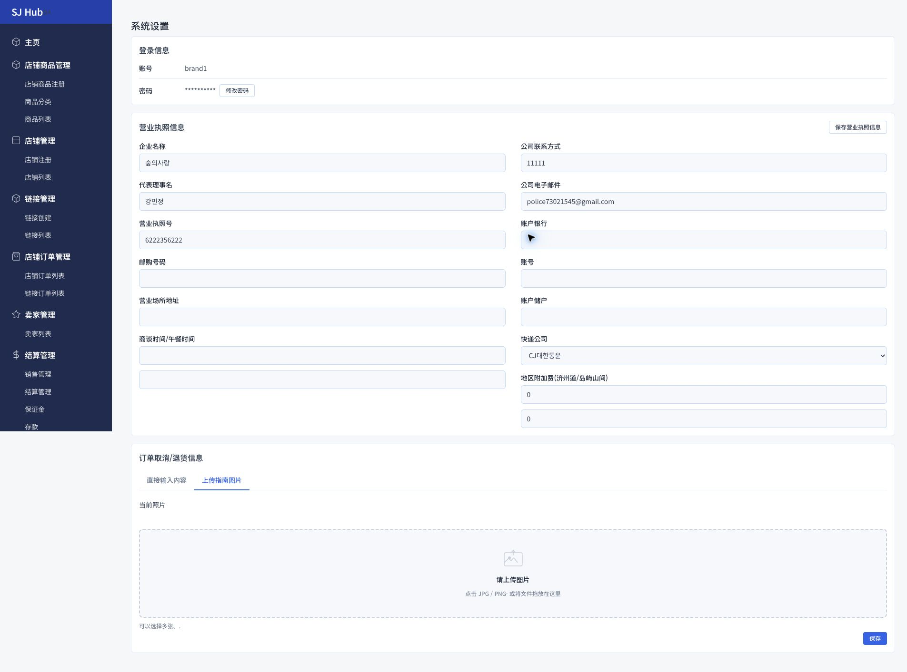

CHAPTER 9
시스템설정
계정 정보 · 사업자 정보 · 취소/반품 안내
1
계정 · 사업자 정보 관리
이 화면은
상점 전체에 적용되는 배송·정산·환불 정책의 기본값
을 관리하는 곳입니다. 로그인 계정, 사업자(영업허가증)·정산 계좌 정보, 택배사와 제주/도서산간 추가배송비, 주문취소·반품 안내까지 한 화면에서 설정합니다.

1
2
3
4
실제 관리자 화면입니다. 스크롤이 긴 화면이라 주요 입력 영역만 표시했습니다.
사용 방법
1
비밀번호 변경
로그인 정보에서 "비밀번호 수정"으로 언제든 비밀번호를 바꿀 수 있습니다.
2
사업자 정보 최신 상태 유지
계좌·연락처·주소 등이 바뀌면 바로 수정 후 저장하세요. 특히 계좌 정보는 정산금이 입금되는 계좌이므로 정확히 입력해야 합니다.
3
택배사 · 지역 추가배송비 설정
기본 택배사와 제주·도서산간 등 지역별 추가배송비를 여기서 한 번만 설정해 두면,
상품 등록
의 개별 배송비 설정과 함께 적용됩니다.
4
주문취소/반품 안내 등록
고객에게 보여줄 취소·반품 정책을 텍스트로 직접 입력하거나, 안내 이미지를 업로드해 등록합니다.
⚠️ 계좌번호는 정산금이 실제로 입금되는 계좌입니다. 변경 시 오탈자가 없는지 다시 한번 확인하세요.
이전 챕터
8. 공지사항
CHAPTER 9 / 9
다음 챕터
없음 (마지막 챕터)